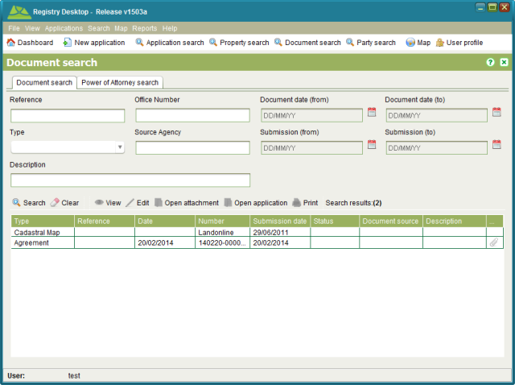

The Document Search screen allows you to find documents of interest for editing or viewing.
It can be accessed from the Search >  Document menu or selecting
Document menu or selecting Document search.
Document search.

Document Search
You can search by any combination of Reference, Office Number, Type, Submission date range Document date range, Source Agency or Description. The data applicable to each search field is as follows
|
If the document is a legal or a government document, it may already have an identifying reference number printed or written on the face of it. The reference number can be searched if it was recorded when capturing the document details. This search field supports partial and full matching. |
|
The number automatically assigned to the document when it was added into Registry. This search field supports partial and full matching. |
|
The type of document to search. The document types available for Registry are discussed in the Document types section of this guide. |
|
A date range covering the period when the document was submitted in Registry. |
|
The date printed or written on the face of the document. This date can be searched if it was recorded when capturing the document details. If the document was not dated, then this date range should remain blank. |
|
The source of the document, e.g. the name of the firm or bank that created the document. This search field supports partial and full matching. |
|
A description given to the document to provide a summary of its content. This search field supports partial and full matching. |
To view the details recorded for a document, select the document in the Search results list
and click the View toolbar button. Documents with attachments will show a paperclip
View toolbar button. Documents with attachments will show a paperclip
 icon. The
icon. The Open attachment
toolbar button can be used to open the image of the document if an image has been linked to
it. To edit the details of the document, select the
Open attachment
toolbar button can be used to open the image of the document if an image has been linked to
it. To edit the details of the document, select the Edit toolbar button. You can
update the details captured for the document as well as attach an image to the document.
Edit toolbar button. You can
update the details captured for the document as well as attach an image to the document.
The Print
toolbar button is not currently implemented. To print a document, open the document
attachment and print the document using the print menu options available from the default
document viewer.
Print
toolbar button is not currently implemented. To print a document, open the document
attachment and print the document using the print menu options available from the default
document viewer.